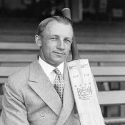

Sir Donald George Bradman (27 August 1908 – 25 February 2001), nicknamed "the Don",was an Australian international cricketer widely acknowledged as the greatest batsman of all time. His cricketing successes have been claimed by Shane Warne, among others, to make Bradman the "greatest sportsperson" in history.Bradman's career Test batting average of 99.94 is considered by some to be the greatest achievement by any sportsman in any major sport. The story that the young Bradman practised alone with a cricket stump and a golf ball is part of Australian folklore.His meteoric rise from bush cricket to the Australian Test team took just over two years Before his 22nd birthday, he had set many records for top-scoring, some of which still stand, and became Australia's sporting idol at the height of the Great Depression. This hero status grew and continued through the Second World War..Read More